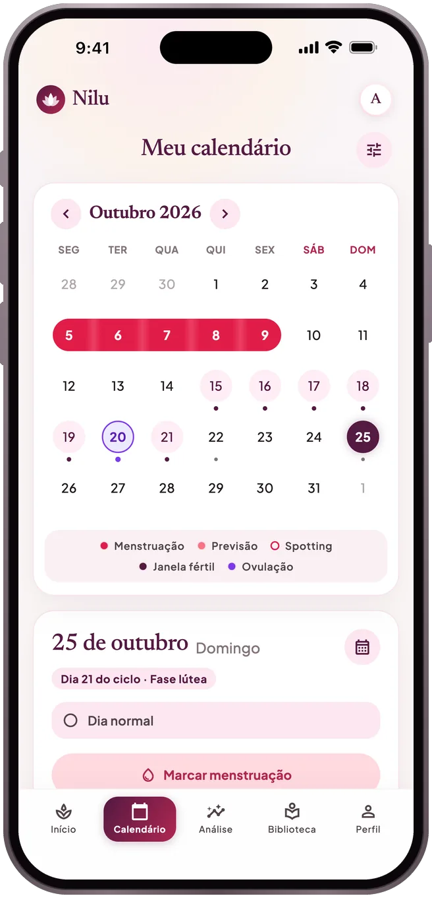
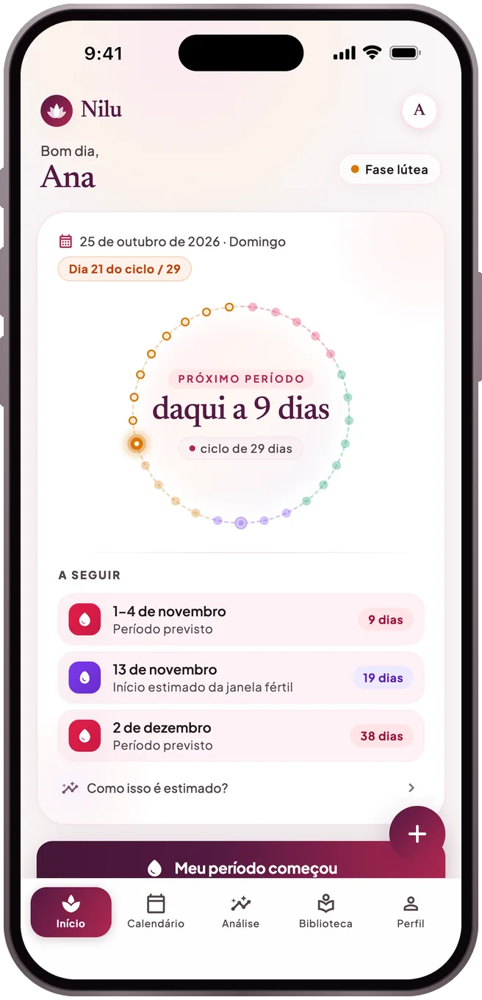
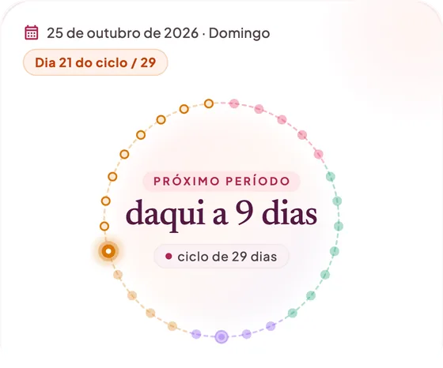
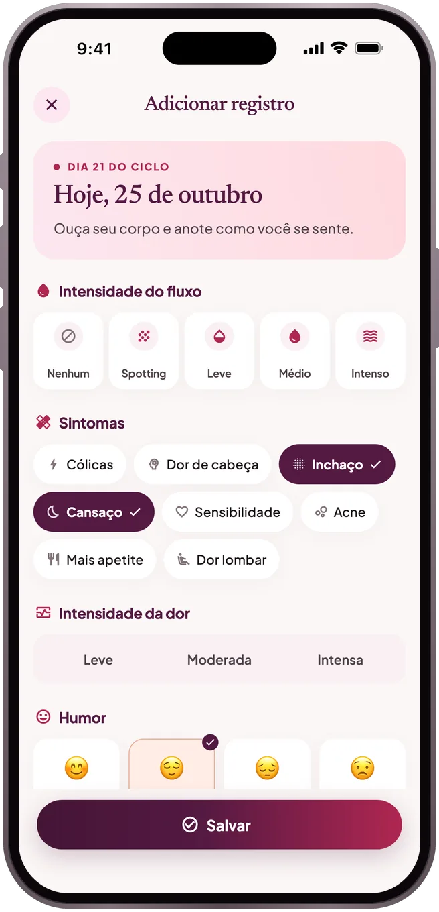
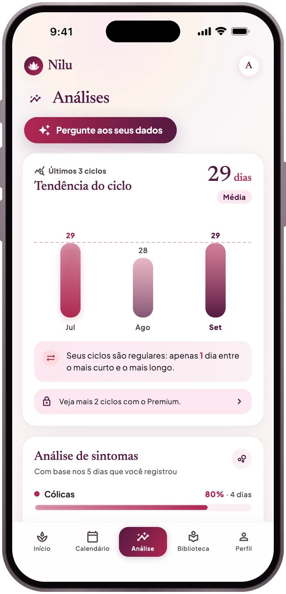
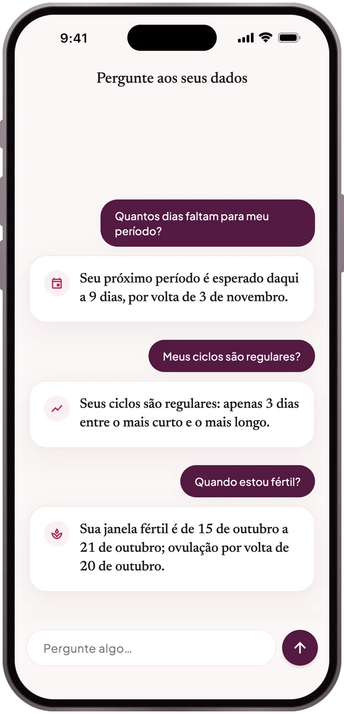
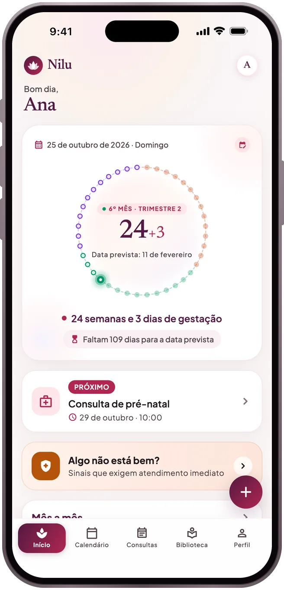
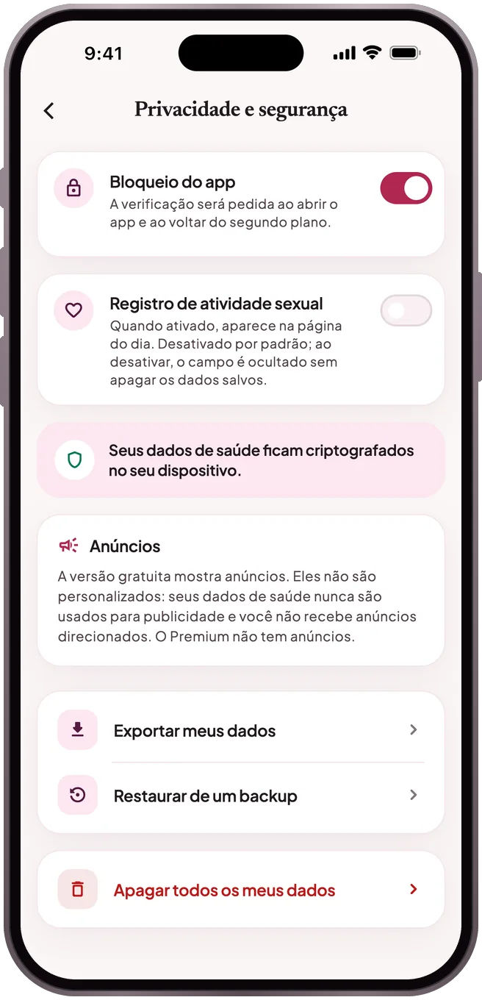

CALENDÁRIO
Sua próxima menstruação como um intervalo
Marque sua menstruação no calendário. O Nilu mostra a próxima como um intervalo provável em vez de uma data única, com a forma como foi calculada e sua janela fértil estimada.
Menstruação · Gravidez · Pós-parto
Um app tranquilo para menstruação, gravidez e pós-parto. Tudo o que você registra fica criptografado no seu celular — sem rastreamento.
Em breve na App Store e no Google Play
Veja como funciona


O que ele faz
CALENDÁRIO
Marque sua menstruação no calendário. O Nilu mostra a próxima como um intervalo provável em vez de uma data única, com a forma como foi calculada e sua janela fértil estimada.
REGISTRO
Fluxo, dor, humor, sintomas e notas, salvos em poucos toques e sempre à mão quando você quiser olhar para trás.

ANÁLISES
Quanto duram seus ciclos, quão regulares eles são, quais sintomas se repetem? Todo o seu histórico de ciclos e um resumo para mostrar ao médico são grátis.

PERGUNTE AOS SEUS DADOS
Pergunte “Quantos dias faltam para minha menstruação?” ou “Meus ciclos são regulares?”. As respostas são calculadas no seu celular com os mesmos números que você vê no app: nada é enviado a um modelo de IA e nada é inventado.

GRAVIDEZ
Na gravidez e no pós-parto: sua semana e seu dia, consultas e lembretes, e os sinais de alerta que não podem esperar.

Seu dia do ciclo e a próxima menstruação num relance; o widget e os lembretes são preparados no seu aparelho.
Artigos com fontes sobre menstruação, nutrição, saúde mental e relacionamentos.
Só o status de proximidade que você escolher é compartilhado, com seu consentimento explícito.
Mude para um celular novo com um backup protegido por senha ou ative a sincronização na nuvem com sua conta.
Privacidade

No seu celular, criptografados. Se você não ativar a sincronização na nuvem, nenhum registro de saúde sai do seu aparelho; o recurso de parceiro só envia o status de proximidade que você escolher compartilhar. Os detalhes estão na Política de Privacidade.
No celular antigo, faça um backup em Perfil → Privacidade e segurança → Exportar meus dados. No novo, restaure pela mesma tela com Restaurar de um backup. Ou ative a sincronização em Perfil → Conta e backup na nuvem e, no celular novo, toque em “Restaurar meus registros da nuvem” na tela de boas-vindas e entre com a mesma conta.
As assinaturas são gerenciadas pela loja. No iPhone: Ajustes → seu nome → Assinaturas → Nilu. No Android: Google Play → Perfil → Pagamentos e assinaturas → Assinaturas → Nilu. O cancelamento vale até o fim do período.
Comece sem conta; entre com a Apple, o Google ou seu e-mail se quiser um backup. Se você não ativar a sincronização, seus registros não saem do seu celular.
O Nilu não faz diagnóstico, não indica tratamento e não é um método contraceptivo. As previsões são calculadas a partir dos seus registros anteriores e são aproximadas.